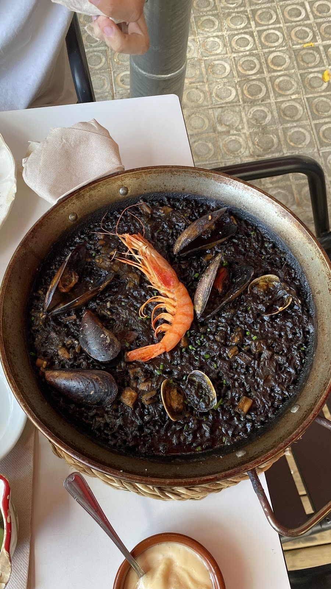

Comida de Olla es de esos sitios a los que vuelven los del barrio: platos sanos y caseros, trato cercano y ese ambiente de cantina de habitués que ya casi no queda en Barcelona.Comida de Olla is one of those places the neighbourhood keeps coming back to: healthy homemade dishes, a warm welcome, and that regulars' canteen feeling that's almost gone from Barcelona.
Nuestra especialidad son los arroces y las paellas — de marisco, negro, con su punto de socarrat — pero cada día hay guisos, pescado fresco y un menú del día que cambia con el mercado. Vienen desde Madrid a comer aquí; reservad, que los fines de semana se llena.Our specialty is rice and paella — seafood, black rice, with the perfect socarrat — but every day there are stews, fresh fish and a set menu that changes with the market. People come from Madrid to eat here; book ahead, weekends fill up.
